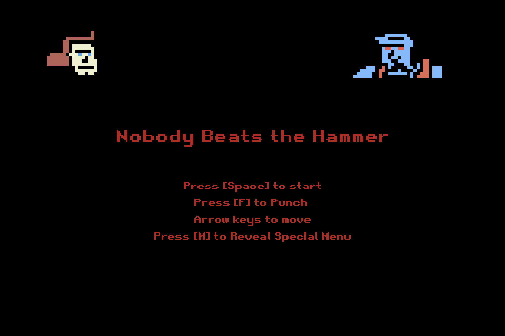
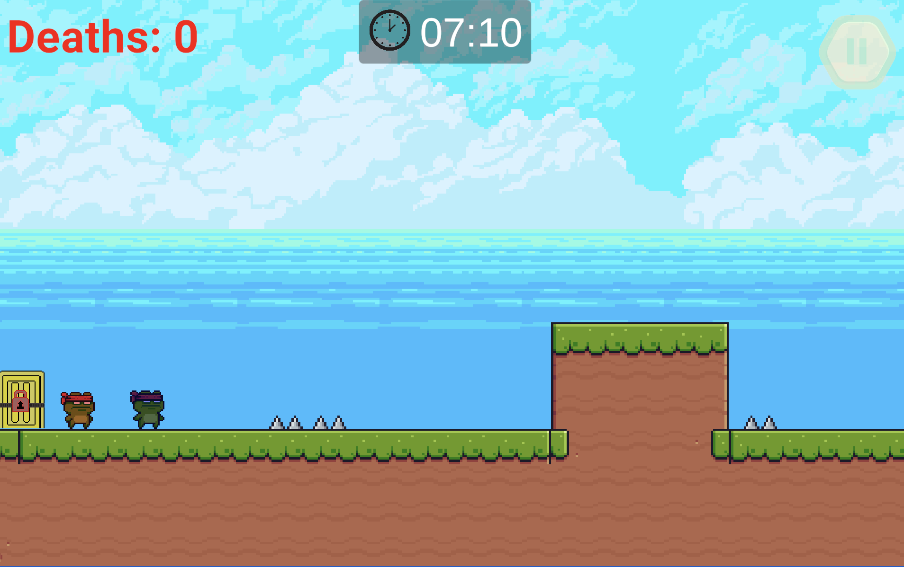
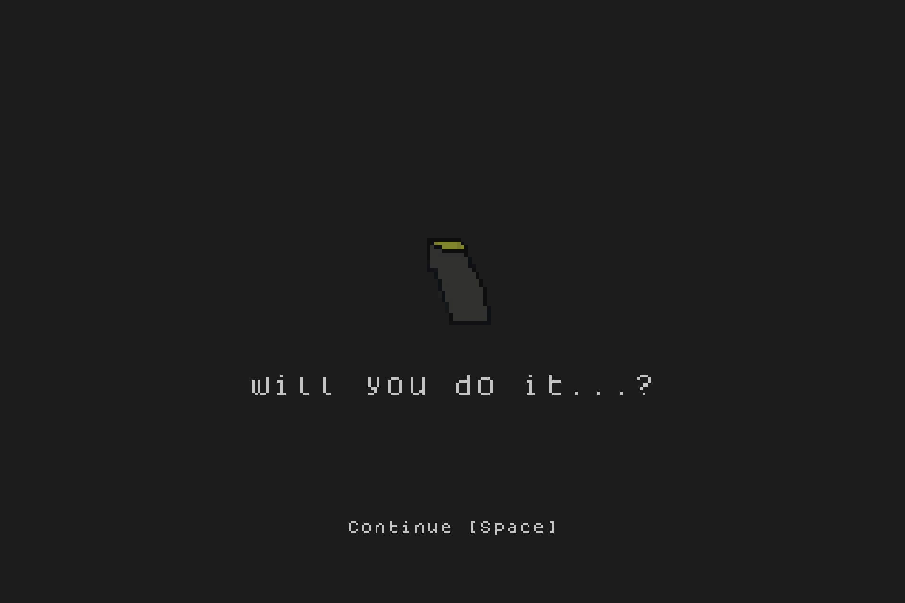
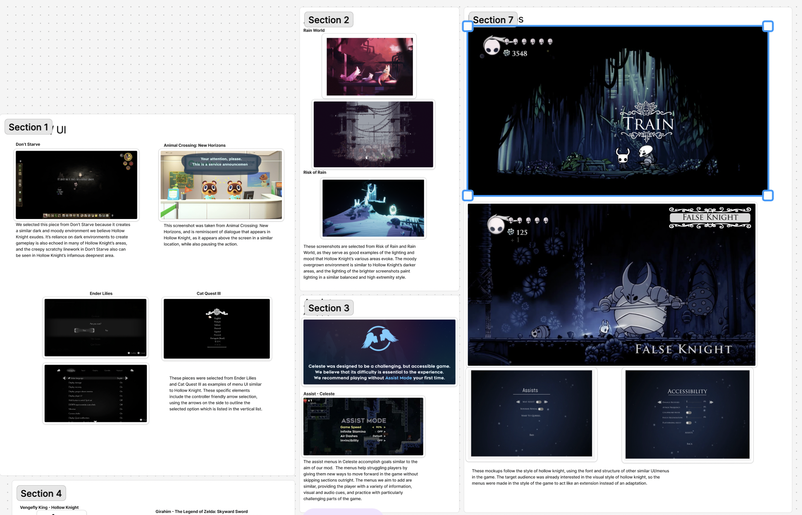
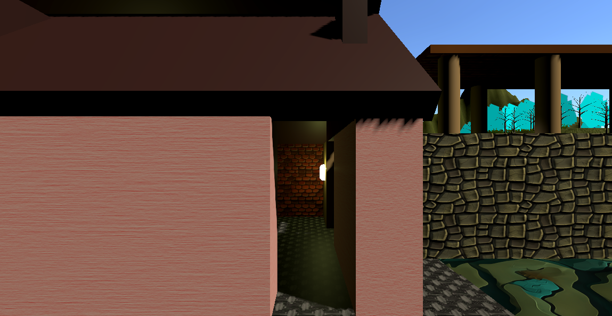
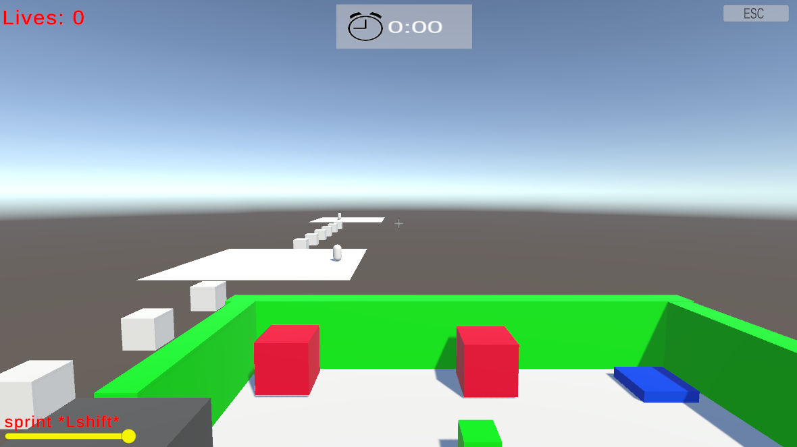

Nobody Beats the Hammer
^Click for Description^
This game utilizes Phaser3 to recreate the game
Nobody Beats the Hammer from the hit cartoon, Regular Show. Worked independently.

Link Frogs
^Click for Description^
This rapid prototype utilizes Unity2D to create a platformer that
can be played with two players, or alone, creating a chaotic experience. Worked on UI/UX and art.

Will you do it?
^Click for Description^
A Phaser3 rapid prototype of a narrative-driven experience where the player slowly tries to join a gang. Worked on art and some programming.

UI/UX Mockup
^Click for Description^
A UI/UX moodboard and wireframe focused on aesthetic layout and catering to a specific persona and User Journey. In this case, we found ways to cater a
difficult game, like Hollow Knight, to beginner players who enjoy exploring and a more managable playthrough.

Flythrough/Tour Prototype
^Click for Description^
In this prototype, I was learning to use Unity and created a sample scene with a variety of assets and textures.

Obstacle Course Prototype
^Click for Description^
In this prototype, I learned how to compliment raycasting and pooling. I also created an AI that tracks and follows the player.